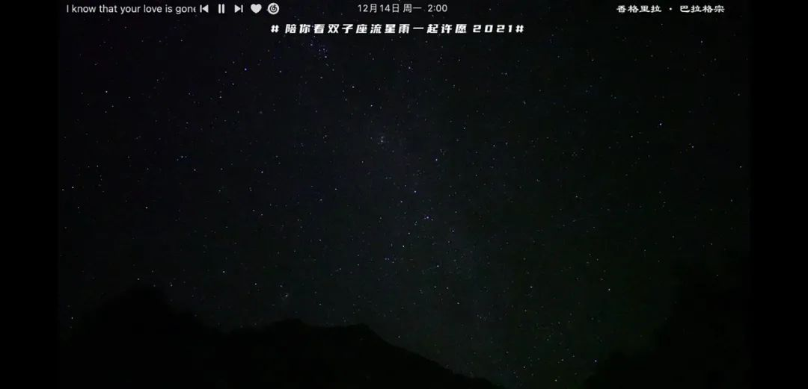

卢梭：如果人们批评了我，并且批评得有道理，改正了我的错误，我什么话都不说；如果人民批评我，而又批评得没有道理，我就更加要什么话都不说。
看这一本《山中来信》的时候，就会想起之前看《社会契约论》的日子。虽然以前，很久很久的以前可以上溯到四年以前或者七年以前，我还经常去打辩论赛。后来写完长评漫话辩论之后越来越觉得要有实际建树，辩论才有意义。而不是辩论学。当然卢梭前一本和现在这本论证日内瓦政府架构的都海星。只是我对这种形式和阴阳怪气很不感冒罢了。
昨晚有一阵双子座流星雨。看到朋友圈分享在香格里拉的巴拉格宗的星空直播。上一次看流星还是在武汉木兰草原，去年国庆之前。有十四十五个月这么久了吗？觉得可以不许愿，单单是看到流星雨就已经足够让人觉得美好了，不需要再多其他的美好来附加在这之后。昴星团双子座，令人想起小时候看西游记里边的昴日星官，作为天上的二十八星宿之一，本相是只大公鸡然后要去啄妖怪。流星是和日落一样美好的事物，一样的自然景观。和去看日落一样，昨天晚上也有人问：“为什么点进去了没有看到流星？”像在吃已经剥好了壳的龙虾。好多次被问到“今天会不会有晚霞？今天为什么没有晚霞？什么时候火烧云会出来？”日出日落，在一个昼夜里都只有一次的机会。错过了，就是另一个昼夜。
看完前一天的日落，又吃第二天的早饭。我把这叫做贪心。何况想让所有的日落在一分钟内过完，想让全部的流星把屏幕全都眩白。如果眼睛没有适应黑暗就去看流星，那和在眼前点了一盏电气小灯有什么区别。我们用一个昼夜的时间来等一个小时的日落，是坐到海边去，把脚伸向海的上方。戴着口罩，是没有在海边的咸腥感觉的。海湾的气味就像是说“海天酱油大浙红醋，佐青芥少许，把玩后食用。”不到日落的时分，没有人知道今天能看到什么；流星在天空中只是一瞬，人们提前准备好愿望，在一刹那闪过所有的想法。天气以其不定，而给每一次的等待赋予了超然的意义在之中。人们既挽留不了日落时候，火烧云的那些茄子紫、鸡蛋黄，也存留不住流星划过天际的明亮，存留不住那些闪耀划过天空连说出口都已经晚了的时刻。新的书还没有到，于是把那本城居设计还了然后借一些新的来：Westernart and the wider world / Paul Wood.Tobreak our chains : social cohesiveness and modern democracy / by Jerome Braun.